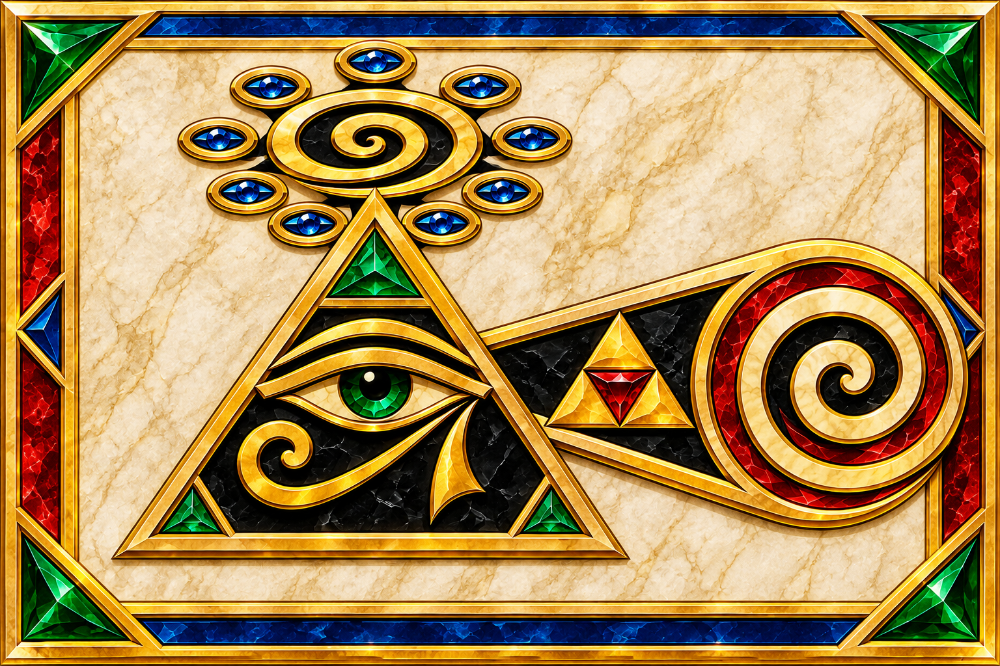

THE MONAD'S PASSAGE

THE MONAD'S PASSAGE
An Alchemical Expression of Observation and Transformation
Central Proposition
The Monad flows through the Observer's Vessel, passes through a Constructed Lens, and produces an observation of the subject.
The glyph represents the relationship between originating unity, the observer, the mechanisms of perception, transformation, and that which is observed.
Symbolic Components
- The Monad | Originating Unity
Represented by the central spiral and its nine surrounding halos.
The Monad symbolizes originating unity: an undivided source from which multiplicity and differentiation may emerge. The surrounding halos represent potential expressions or possibilities extending from this originating principle.
- The Observer's Vessel | Eye-in-Triangle
The eye and triangle constitute a single symbolic object: the Observer's Vessel.
The triangle represents the observer's structural boundaries, position, and perspective. The eye represents its faculty of perception.
Together, they embody the observer as an instrument capable of examining its surroundings. The vessel establishes the position of observation, while the eye represents the capacity to perceive.
The observer is therefore not separate from the act of perception, but neither is its perception necessarily an accurate representation of reality.
- The Constructed Lens | Sierpiński Projection
The Sierpiński projection represents the constructed lens through which the observer examines the subject.
Its geometry symbolizes the divisions, relationships, reference points, boundaries, assumptions, and interpretive structures that influence how something is perceived.
The lens is distinct from the observer. It is the framework employed by the observer to examine and interpret the subject.
Importantly, this framework must remain open to examination and revision.
- The Act of Observation | Projection
The projection represents the relationship established between the Observer's Vessel, its Constructed Lens, and the subject being examined.
It illustrates the passage from perception toward differentiation and interpretation.
Observation is not simply passive reception. It is an active process in which the observer employs a particular framework to distinguish, organize, and interpret what is encountered.
- The Observed | Terminal Spiral
The terminal spiral represents the subject of observation.
It may signify any object, phenomenon, system, event, or abstract concept toward which observation is directed.
Its meaning is intentionally unrestricted. The subject is not defined by the instrument used to examine it.
Philosophical Interpretation
The glyph illustrates a progression from originating unity toward differentiated observation.
The Monad represents the originating principle. The Observer's Vessel establishes the position and faculty of perception. The Sierpiński projection represents the constructed framework through which the observer examines the subject. The projection embodies the observational relationship, ultimately terminating in the representation of the observed.
This introduces an important epistemological distinction: the observer and the lens are separate components of the observational process.
The observer employs the lens, but must also remain capable of examining its limitations, identifying its distortions, and correcting its assumptions.
The resulting observation must not be mistaken for the entirety of the observed subject.
Foundational Principles
THE LENS CONSTRUCTS THE OBSERVATION, NOT NECESSARILY THE OBSERVED.
THE OBSERVER MUST REMAIN CAPABLE OF EXAMINING THE INSTRUMENT OF ITS OWN PERCEPTION.
The validity of an observation cannot be established merely through the internal consistency of the framework that produced it. That framework must itself remain subject to examination.
Significance of the Symbolism
The glyph employs geometric and alchemical expression to communicate relationships that are otherwise difficult to represent directly.
It provides a conceptual model for examining unity, perception, observation, differentiation, and the relationship between an observer and the reality being examined.
Its purpose is not to establish a physical mechanism through symbolism, but to provide a structured philosophical instrument through which questions about the nature and limitations of observation can be explored.
To observe is to establish a relationship with the subject. To understand is to examine not only what is perceived, but also the observer and the instrument through which perception is formed.